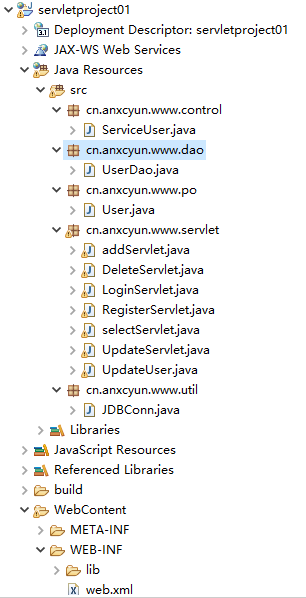

原文连接:https://www.cnblogs.com/Anxc/p/11404403.html
原码，项目中遇到的错误，解决方法，文章最后有链接可以获取
项目简介
*有的网友说在修改和删除时会触发error,建议各位不要去把用户名命名为中文！
功能描述
登陆，注册，用户一览表，修改，删除，添加，模糊查询和精确查询
采用的技术及环境
JSP：前端的信息展示
Servlet：业务逻辑功能实现，及调用数据库的实现数据处理和传输
MySQL：用来实现数据存储
利用Eclipse来实现，MySQL数据库版本：5.x
运行效果展示
数据库数据
项目结构图

*因屏幕小，截图用了两张图片
登陆页面
登陆成功用户一览表页面
注册页面
*因我在数据设计表时，性别（sex）设置的大小为2长度，所以我这里输入一个字符，为了避免数据超出范围
查询可选项
模糊查询班级中有“1”的用户实现
修改用户界面
删除没有界面提示，直接删除
项目创建逻辑理解
整体理解
以jsp-业务逻辑代码-数据库为一条中心线
jsp:负责数据的展示和数据的收集
web.xml:负责当前页面信息提交给谁，哪个servlet来处理当前页面提交的数据
servlet:用来进行数据的处理和数据的传输（jsp<==>数据库）
jsp
前端的页面编写
只要有一些html基础，会编写几个常见的标签就可以。
要会用js获取它们的值，这样就可以了
文本框：<input type="text" id="username" />
密码框：<input type="password" id='"password">
单选按钮：<input type="radio" name="sex" value="0" />男<input type="radio" name="sex" value="1">
……form表单：
<form method="post" action="loginServlet" >
这中间用来编写用户要提交的数据（要用input，button）
<input type="submit" value="提交">
<input type="reset" value="重置">
</form>EL表达式：
用来获取servlet传递到页面的数据
首先要在jsp页面声明文件头，用来告诉jsp页面，可以使用EL表达式
假如说你从servlet向jsp传递了一个User对象，你要在jsp页面中输出User对象的属性，你要把这个User类在文件头中声明：
<%@page import="cn.anxcyun.www.po.User" %>import="包名.类名"
常见：
获取值${name} name：你在servlet中定义的值（小写字母，如果大写的话，容易出错）
我在这里使用到了JSTL，JSP标准标签库（JSTL）是一个JSP标签集合，它封装了JSP应用的通用核心功能。（文章最后有链接，一看就懂）
web.xml相关配置编写
文件位置：项目/WebContent/WEB-INF/web.xml
文件在创建时可以自动生成（须打对勾）,如果没有按如下图示：
文件截图：
文件：
<? xml>
<web-app 加上文件的规范（自动生成）>
<display-name>项目名</display-name>
<welcome-file-list>
<welcome-file>index.jsp</welcome-file>项目运行时的第一个页面（可自己更改）
</welcome-file-list>
<!-- 注册 -->这是注释不用管 ，一个servlet要如下两个标签（servlet和servlet-mappping）
<servlet>
<servlet-name>register</servlet-name> 定义一个servlet，jsp的form表单中的action
<servlet-class>cn.anxcyun.www.servlet.RegisterServlet</servlet-class> 你jsp提交数据后要执行的servlet类
</servlet>
<servlet-mapping>
<servlet-name>register</servlet-name> 两个servlet的name必须相同
<url-pattern>/register</url-pattern> 当你运行成功以后，下一个页面的url栏显示的内容：localhost:8080/项目名/你定义的url-pattern
</servlet-mapping>
</web-app>servlet的逻辑层编写
思想
分模块化思想：因为这一层涉及到了对数据的处理和页面跳转到哪个页面，所以说，我利用了几个包来实现它：
servlet: 获取页面提交的数据，交给下一层处理，根据处理的结果，指定要跳转的页面
control: 目前没有实际的用途，就是servlet和dao层的接口传递
dao: 用来实现与数据库的业务逻辑，包括表的增删改查，（查询：登陆查询，一览表查询）
po: 基类（bean）主要是用来映射数据库中的表，一个类对应一个表（表的列值对应类的变量属性），这样在查询时数据传递时，可以用对象传递
细化：
servlet:
public class myServlet extends HttpServlet{
@Override
protected void service(HttpServletRequest req, HttpServletResponse resp) throws ServletException, IOException {
// TODO Auto-generated method stub
super.service(req, resp);
}
}首先要继承于 HttpServlet类
（导入包：import javax.servlet.http.HttpServlet;
import javax.servlet.http.HttpServletRequest;
import javax.servlet.http.HttpServletResponse;）
Eclipse的快捷键：
导入包：ctrl + shift + O
快速生成方法：alt + /
然后重写默认方法：service + （alt + /）
@Override
protected void service(HttpServletRequest req, HttpServletResponse resp) throws ServletException, IOException {
// TODO Auto-generated method stub 可以删除
super.service(req, resp); 可以删除
}获取值：
String number = new String(req.getParameter("number").getBytes("iso-8859-1"), "utf-8");
其实 直接:String number = req.getParameter("number");就可以，但是我的值在传递时中文时乱码，所以加上了要跳转的页面：
req.setAttribute("list", list);
把一个数据保存到页面（第一个是你在页面要用的list ，第二个是你在servlet中的数据，可以是集合，对象和基本数据）
req.getRequestDispatcher("hello.jsp").forward(req, resp); 跳转页面数据库：
JDBC连接数据库
import java.sql.Connection;
import java.sql.DriverManager;
import java.sql.PreparedStatement;
import java.sql.ResultSet;
import java.sql.SQLException;
/**
*
* @ClassName: JDBC
* @Description: 测试与数据库的连接
* @author Anxc
* @date 2019年8月7日
*
*/
public class JDBC {
// 定义一些基础变量
String url = "jdbc:mysql://localhost:3306/数据库名?useUnicode=true&characterEncoding=UTF-8";
String username="root";
String password="password";
private static int id=0;
// 定义私有变量
private PreparedStatement prepareStatement;
private Connection conn;
/**
*
* @Title: getConnection
* @Description: 数据库连接
* @param @return 参数
* @return Connection 返回类型
* @throws
*/
public Connection getConnection() {
try {
// 加载JDBC驱动
Class.forName("com.mysql.jdbc.Driver");
// 获取连接
conn=DriverManager.getConnection(url, username, password);
return conn;
} catch (Exception e) {
// TODO Auto-generated catch block
e.printStackTrace();
return null;
}
}
/**
*
* @Title: addUser
* @Description: 增加用户到数据库
* @param 参数
* @return void 返回类型
* @throws
*/
public void addUser() {
String sql="insert into UserInfo values(?,?,?)";
// 定义添加的用户信息
id++;
String name = "张三";
String pwd = "12";
Connection conn = getConnection();
try {
prepareStatement = conn.prepareStatement(sql);
prepareStatement.setInt(1, id);
prepareStatement.setString(2, name);
prepareStatement.setString(3, pwd);
prepareStatement.executeUpdate();
} catch (SQLException e) {
// TODO Auto-generated catch block
e.printStackTrace();
}finally {
try {
prepareStatement.close();
conn.close();
} catch (SQLException e) {
// TODO Auto-generated catch block
e.printStackTrace();
}
}
}
/**
*
* @Title: deleteUser
* @Description: 删除一个用户信息
* @param 参数
* @return void 返回类型
* @throws
*/
public void deleteUser() {
// 定义SQL语句
String sql="delete from UserInfo where id =?";
Connection conn = getConnection();
try {
// 执行SQL语句
prepareStatement = conn.prepareStatement(sql);
// 替换占位符？
prepareStatement.setInt(1, 1);
// 获取返回结果集
prepareStatement.executeUpdate();
} catch (SQLException e) {
// TODO Auto-generated catch block
e.printStackTrace();
}finally {
try {
// 关闭数据库连接
prepareStatement.close();
conn.close();
} catch (SQLException e) {
// TODO Auto-generated catch block
e.printStackTrace();
}
}
}
/**
*
* @Title: insertUser
* @Description: 修改User
* @param 参数
* @return void 返回类型
* @throws
*/
public void updateUser() {
String sql="update UserInfo set username=? where id=?";
Connection conn = getConnection();
try {
prepareStatement = conn.prepareStatement(sql);
prepareStatement.setString(1, "lll");
prepareStatement.setInt(2, 1);
prepareStatement.executeUpdate();
} catch (SQLException e) {
// TODO Auto-generated catch block
e.printStackTrace();
}finally {
try {
prepareStatement.close();
conn.close();
} catch (SQLException e) {
// TODO Auto-generated catch block
e.printStackTrace();
}
}
}
/**
*
* @Title: selectUser
* @Description: 查询数据
* @param 参数
* @return void 返回类型
* @throws
*/
public void selectUser() {
String sql = "select * from UserInfo";
Connection conn = getConnection();
try {
prepareStatement = conn.prepareStatement(sql);
ResultSet res = prepareStatement.executeQuery();
// 遍历输出
while(res.next()) {
// int id = res.getInt(1);
System.out.println("id："+res.getInt(1)+"|name:"+res.getString(2)+"|pwd:"+res.getString(3));
}
} catch (SQLException e) {
// TODO Auto-generated catch block
e.printStackTrace();
}finally {
try {
prepareStatement.close();
conn.close();
} catch (SQLException e) {
// TODO Auto-generated catch block
e.printStackTrace();
}
}
}
/**
*
* @Title: initTable
* @Description: 删除表的所有数据，使系统运行时id从0开始
* @param 参数
* @return void 返回类型
* @throws
*/
public void initTable() {
String sql = "truncate userInfo";
System.out.println("-----------init-----------");
Connection conn = getConnection();
try {
prepareStatement = conn.prepareStatement(sql);
prepareStatement.executeUpdate();
} catch (SQLException e) {
// TODO Auto-generated catch block
e.printStackTrace();
}finally {
try {
prepareStatement.close();
conn.close();
System.out.println("-----------ok------------");
} catch (SQLException e) {
// TODO Auto-generated catch block
e.printStackTrace();
}
}
}
}这是我以前写的一个，可以自己理解一下
附录
导入jar包:
jsp文件头报错：
是因为没有配置tomcat:
要导入的jar包：
第一个和第三个是JSTL的包（https://www.runoob.com/jsp/jsp-jstl.html 这教程，里面有安装信息）
第二个是JDBC需要的包（访问数据库） (https://www.runoob.com/java/java-mysql-connect.html 在这里下载jar)
这几个jar包复制到lib文件夹下，然后：
对于用户名是中文的，执行修改和删除功能报错的代码，可以按照以下进行修改：
要修改的文件：
修改后的样子:
如果别的也由于中文的问题出错，可以把下面这几个文件都按照上面的改了：
URL传参中需要处理的特殊字符及方法：
https://blog.csdn.net/loongshawn/article/details/54613310 （还是没解决实际问题）
url特殊字符转义及解决方法（附有例子）
https://blog.csdn.net/u013412790/article/details/51441972 （完美解决关于“%”的问题）
executeQuery返回值如何判断是否有内容：
https://blog.csdn.net/yw_1207/article/details/80832698
JSP传递参数给servlet的三种方法
https://blog.csdn.net/zeephom/article/details/79607173
EL表达式用法
https://www.cnblogs.com/xdp-gacl/p/3938361.html
数据库代码：
DROP TABLE IF EXISTS `user`;
CREATE TABLE `user` (
`u_username` varchar(20) CHARACTER SET utf8 COLLATE utf8_general_ci NOT NULL,
`u_class` varchar(20) CHARACTER SET utf8 COLLATE utf8_general_ci NULL DEFAULT NULL,
`u_number` varchar(20) CHARACTER SET utf8 COLLATE utf8_general_ci NULL DEFAULT NULL,
`u_sex` varchar(2) CHARACTER SET utf8 COLLATE utf8_general_ci NULL DEFAULT NULL,
`u_tel` varchar(20) CHARACTER SET utf8 COLLATE utf8_general_ci NULL DEFAULT NULL,
PRIMARY KEY (`u_username`) USING BTREE
) ;原码
Github 原码项目:https://github.com/Anxc520/servletProject.git
项目导入步骤：
1.1 新建项目
转2.0
1.2 如果没有Dynamic Web project：
2.0 项目信息

3.0 复制项目
解压下载的项目并打开：
复制红框的两个文件夹到我们刚才2.0 最后打开的文件夹下，然后刷新eclipse项目，运行即可，但是数据库的表要自己新建一下。